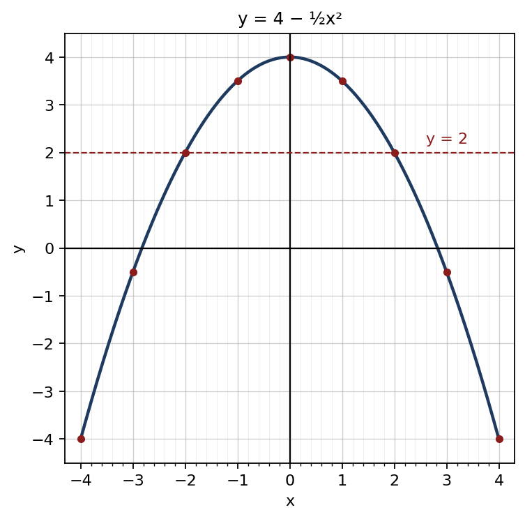

1. √1.2321 = √1232110000 = 111100
අවසාන පිළිතුර: 1.11
(ලකුණු 2)2. 208 − 158 = 58 ; 85 × 58
අවසාන පිළිතුර: 1
(ලකුණු 2)3. 2a2 − 8a + 3a − 12
අවසාන පිළිතුර: 2a2 − 5a − 12
(ලකුණු 2)4. (2x)2 − 2(2x)(3) + 32
අවසාන පිළිතුර: (2x − 3)2
(ලකුණු 2)5. x(x + 3) ; (x + 3)(x − 3) ; 2x
අවසාන පිළිතුර: 2x(x + 3)(x − 3)
(ලකුණු 2)6. (x + 1)2 − x(x − 1)x(x + 1) = x2 + 2x + 1 − x2 + xx(x + 1)
අවසාන පිළිතුර: 3x + 1x(x + 1)
(ලකුණු 2)7. චාප දිග = 12 × 2 × 227 × 7 = 22 cm ; පරිමිතිය = 22 + 14
අවසාන පිළිතුර: 36 cm
(ලකුණු 2)8. AĈB = x ⇒ BÂC = 2x ; 3x = 90° ⇒ x = 30°
අවසාන පිළිතුර: 60°
(ලකුණු 2)9. x − 3 = 23 = 8
අවසාන පිළිතුර: x = 11
(ලකුණු 2)10. log2 483 = log2 16 = log2 24
අවසාන පිළිතුර: 4
(ලකුණු 2)11. a = 4, d = 5 ; Tn = 4 + (n − 1)5
අවසාන පිළිතුර: Tn = 5n − 1
(ලකුණු 2)12. A ∪ B = {a, b, c, d, e}
අවසාන පිළිතුර: (A ∪ B)′ = {f}
(ලකුණු 2)13. P × (1 + 18100) = 14 160 ⇒ 1.18P = 14 160
අවසාන පිළිතුර: රු. 12 000
(ලකුණු 2)14. මුළු මිනිස් දින = 360 ; දින 6 දී = 90 ; ඉතිරි 270 ÷ 12
අවසාන පිළිතුර: දින 2212
(ලකුණු 2)15. කාලය = 60 ÷ 40 + 60 ÷ 60 = 1.5 + 1 = පැය 2.5 ; 120 ÷ 2.5
අවසාන පිළිතුර: 48 km/h
(ලකුණු 2)16. 1u = 1f − 1v = v − ffv
අවසාන පිළිතුර: u = fvv − f
(ලකුණු 2)17. එකතුව 7: (1,6), (2,5), (3,4), (4,3), (5,2), (6,1) ⇒ 6 ; 6 ÷ 36
අවසාන පිළිතුර: 16
(ලකුණු 2)18. 240 × 75360
අවසාන පිළිතුර: 50
(ලකුණු 2)19. සමාන්තරාස්රය = 2 × ත්රිකෝණය = 2 × 30
අවසාන පිළිතුර: 60 cm2
(ලකුණු 2)20. 6 m = 600 cm ; 600 ÷ 200
අවසාන පිළිතුර: 3 cm
(ලකුණු 2)| (a) | |
| (x − 5)(x + 5) ; 2x2 − 9x − 5 = (2x + 1)(x − 5) | 1 |
| (x − 5)(x + 5)(2x + 1)(x − 5) × 2x + 1x + 5 | 1 |
| = 1 | 1 |
| (b) | |
| f = 4s ......① | 1 |
| f + 5 = 3(s + 5) ......② | 1 |
| 4s + 5 = 3s + 15 ⇒ s = 10 | 1 |
| පුතා අවු. 10, පියා අවු. 40 | 1 |
| (c) | |
| (2x − 3)(x + 4) = 0 | 2 |
| x = 32 හෝ x = −4 | 1 |
මුළු ලකුණු: 10
| (a) | |
| x = −2 ⇒ y = 2 ; x = 3 ⇒ y = −0.5 | 1 |
| (b) | |
| නිවැරදි පරිමාණය සහ අක්ෂ | 1 |
| ලක්ෂ්ය 9 නිවැරදිව ලකුණු කිරීම | 1 |
| සුමට වක්රය | 1 |
 | |
| (c) | |
| (i) උපරිම අගය 4 ; සමමිති අක්ෂය x = 0 | 1 |
| (ii) x ≈ ±2.8 (±2.8 – ±2.9 පිළිගන්න) | 1 |
| x2 = 8 ⇒ x = ±√8 ; √8 ≈ 2.8 | 1 |
| (iii) −2 < x < 2 | 1 |
| (iv) y ≈ 2.9 (2.8 – 2.9 පිළිගන්න) | 1 |
| (d) | |
| y = −12x2 | 1 |
මුළු ලකුණු: 10
| (a) | |
| 14 × 14 × 10 = 1 960 cm3 | 1 |
| (b) | |
| 227 × 3.5 × 3.5 × 10 | 1 |
| = 385 cm3 | 1 |
| (c) | |
| 1 960 − 385 = 1 575 cm3 | 1 |
| (d) | |
| ඝනකාභයේ මුළු පෘෂ්ඨය = 2(14 × 14 + 14 × 10 + 14 × 10) = 952 cm2 | 1 |
| වෘත්ත මුහුණත් දෙක ඉවත් කිරීම = 2 × 227 × 3.5 × 3.5 = 77 cm2 | 1 |
| සිදුරේ වක්ර පෘෂ්ඨය = 2 × 227 × 3.5 × 10 = 220 cm2 | 1 |
| මුළු පෘෂ්ඨය = 952 − 77 + 220 = 1 095 cm2 | 1 |
| (e) | |
| 1 095 × 2 | 1 |
| = රු. 2 190 | 1 |
මුළු ලකුණු: 10
| (a) | |
| BD = DC සහ A සිට BC ට උස දෙකටම පොදුයි (AD මධ්යස්ථයකි) | 1 |
| ∴ ΔABD = ΔADC | 1 |
| (b) | |
| BE, ABD හි මධ්යස්ථය ⇒ ΔBED = 12 ΔABD | 1 |
| CE, ADC හි මධ්යස්ථය ⇒ ΔCED = 12 ΔADC | 1 |
| ΔBEC = ΔBED + ΔCED = 12(ΔABD + ΔADC) = 12 ΔABC | 1 |
| (c) | |
| ΔABD = 12 × 64 = 32 cm2 | 1 |
| ΔABE = 12 × 32 = 16 cm2 | 1 |
| (d) | |
| ΔFBC හා ΔABC එකම BC පාදය මත, BC ∥ AF සමාන්තර රේඛා අතර පිහිටයි | 1 |
| ⇒ ΔFBC = 64 cm2 | 1 |
| FD මධ්යස්ථය ⇒ ΔFBD = 12 × 64 = 32 cm2 | 1 |
මුළු ලකුණු: 10
| (a) | |
| මාතය = පොත් 2 | 1 |
| (b) | |
| සමුච්චිත සංඛ්යාත: 3, 10, 22, ... ; 20 හා 21 වන අගයන් 2 | 1 |
| මධ්යස්ථය = පොත් 2 | 1 |
| (c) | |
| fx: 0, 7, 24, 27, 24, 15 | 1 |
| Σfx = 97 | 1 |
| මධ්යන්යය = 97 ÷ 40 = 2.425 | 1 |
| (d) | |
| පොත් 3 ට වැඩි = 6 + 3 = 9 | 1 |
| 940 × 100 = 22.5% | 1 |
| (e) | |
| සෑම අගයකටම 2 එකතු වන නිසා මධ්යන්යයටද 2 එකතු වේ | 1 |
| 2.425 + 2 = 4.425 | 1 |
මුළු ලකුණු: 10
| (a) | |
| a = 25, d = −2 ; T6 = 25 + 5(−2) | 1 |
| = 15 | 1 |
| (b) | |
| 25 + (n − 1)(−2) = 1 | 1 |
| n = 13 | 1 |
| (c) | |
| S13 = 132 (25 + 1) | 1 |
| = 13 × 13 | 1 |
| = 169 | 1 |
| (d) | |
| S8 = 82 [2 × 25 + 7 × (−2)] = 4 × 36 = 144 | 1 |
| ඉවත් කළ කොට = 169 − 144 | 1 |
| = 25 | 1 |
මුළු ලකුණු: 10